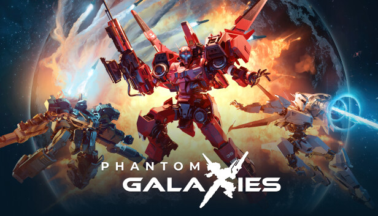
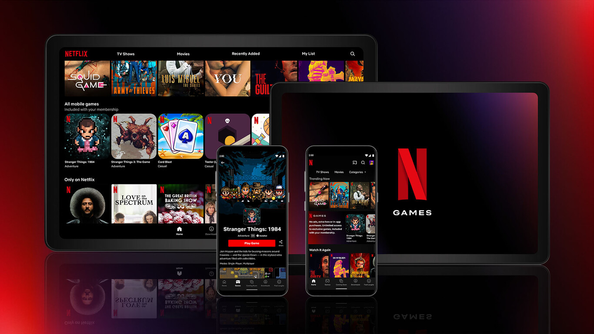
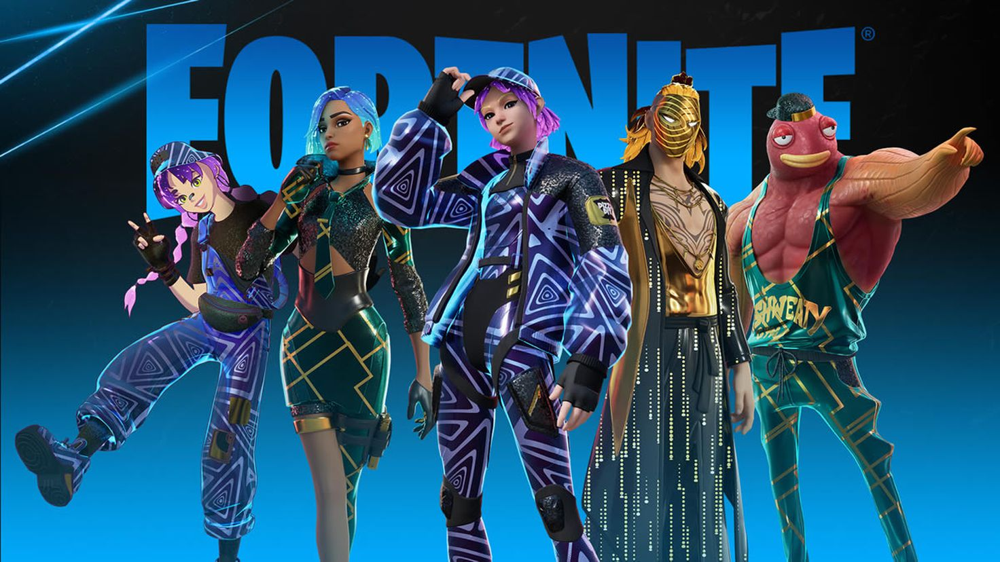
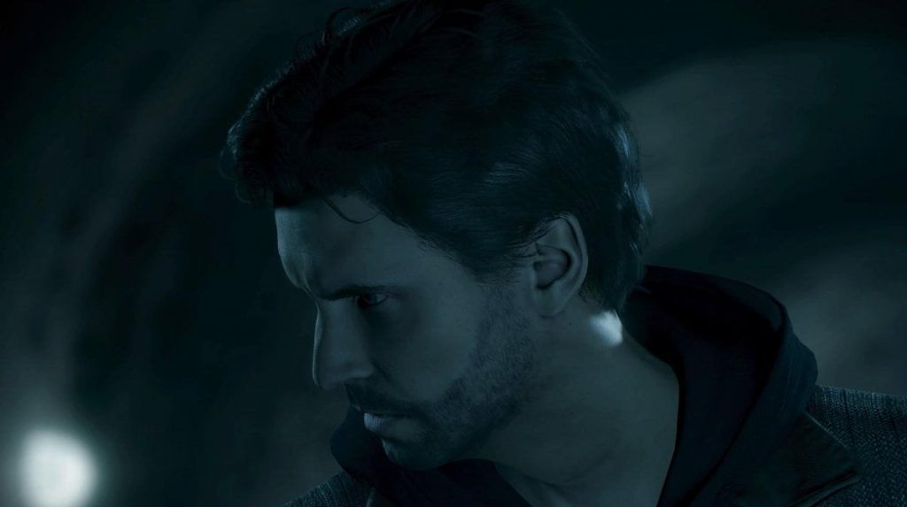
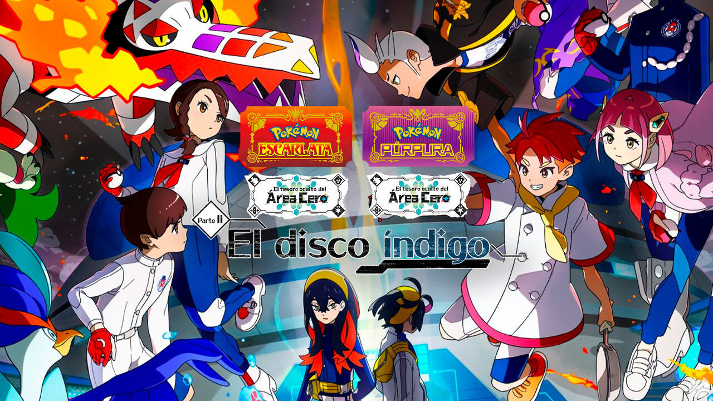
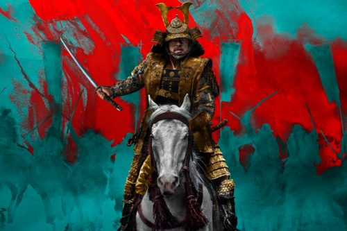

ULTIMAS NOTICIAS DE VIDEOJUEGOS
Lanzamiento de Phantom Galaxies
Están empezando a lanzarse juegos de blockchain más robustos y pulidos, y Phantom Galaxies de Animoca Brands está listo para lanzarse en acceso anticipado el 15 de noviembre. Construido alrededor de mechs y avatares NFT, este shooter de mechs te permite pilotar robots gigantes tanto en el espacio como en tierra, con gráficos lujosos impulsados por Unreal Engine 5.
Se lanzará en Steam y en la Epic Games Store en PC, por lo que parece que al menos la versión de Steam carecerá de soporte para NFT debido a la postura de la plataforma sobre la tecnología blockchain.

Para más: https://decrypt.co/es/204124/top-6-videojuegos-que-seran-lanzados-en-noviembre-de-2023
Netflix busca añadir la franquicia Grand Theft Auto a su portafolio gaming
Netflix está buscando ampliar su catálogo de videojuegos, y una de las franquicias que estaría en su mira es Grand Theft Auto. Según fuentes cercanas a las negociaciones, Netflix está en conversaciones con Rockstar Games para añadir los juegos de GTA a su servicio de streaming. Si el acuerdo se concreta, los juegos de GTA estarían disponibles en la suscripción de Netflix, lo que podría suponer un gran impulso para el servicio.

Fortnite pagará indemnización a jugadores
Epic Games, el desarrollador de Fortnite, ha llegado a un acuerdo con los usuarios que demandaron a la compañía por el uso de moneda virtual en el juego. El acuerdo establece que Epic Games pagará a los jugadores una indemnización de 28,000,000 de dólares. Los jugadores alegaban que Epic Games había engañado a los usuarios sobre el valor de la moneda virtual del juego.

Alan Wake Remastered ha recuperado ya los costes de desarrollo y de marketing
El juego de acción y terror Alan Wake Remastered fue lanzado en octubre de 2021 y ha sido un éxito de crítica y público. Según el estudio Remedy Entertainment, Alan Wake Remastered ya ha recuperado los costes de su desarrollo y marketing. Esto es una buena noticia para la compañía, ya que demuestra que la remasterización ha sido un éxito comercial.

Para más: https://es.italy24.press/technology/984267.html
Pokémon Escarlata y Púrpura pone fecha de lanzamiento a la Parte 2 de El tesoro oculto del Área Cero
La segunda parte del DLC de Pokémon Escarlata y Púrpura, El tesoro oculto del Área Cero: El disco índigo, se lanzará el 21 de julio de 2024. Este DLC incluirá nuevos Pokémon, nuevas zonas para explorar y nuevas historias.

OTRAS NOTICIAS...
La voz original de Mario se despide del personaje luego de 30 años
Charles Martinet, la voz original de Mario desde 1992, ha anunciado su retiro del personaje. Martinet ha dado voz a Mario en más de 200 juegos, y su interpretación es una de las más icónicas de la historia de los videojuegos.
La serie del Japón feudal que vas a querer ver es de Disney+ y tiene un impresionante primer tráiler; así se presenta Shōgun
Disney+ ha publicado el primer tráiler de Shōgun, una serie de televisión basada en la novela homónima de James Clavell. La serie, que se estrenará en 2024, está protagonizada por Hiroyuki Sanada y Tadanobu Asano.
